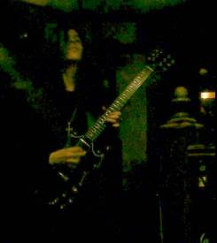

Jon K.
Jon was the initial inspiration behind SabbraCadabra back in 1997. It was once said of him, "He doesn't do'happy'" and his moribund nature lends itself perfectly to Tony Iommi'stombstone riffs and guitar work. Jon also shares Tony's perfectionistnature and takes great delight in making everyone else's life amisery by constantly demanding higher standards. Jon comes from amusical background that started with the Beatles(!) and ended with hislove of heavy metal from the 70's, 80's and 90's. Other than BlackSabbath, Jon sights bands such as Iron Maiden, Judas Priest and (morerecently) Cradle of Filth as large influences on his work; he is alsovery fond of the works of Jimmy Page (Led Zeppelin's legendaryguitarist). He has worked with a number of bands in the past, all in theheavy metal genre including 'Slaymaker'and 'Requiem+'and is currentlyworking on a new solo project that should hopefully be ready later thisyear. Jon also works as a guitar tutor in the Sussex area, teaching at Circus Bizarre, specialising in hard rock and heavy metal techniques.